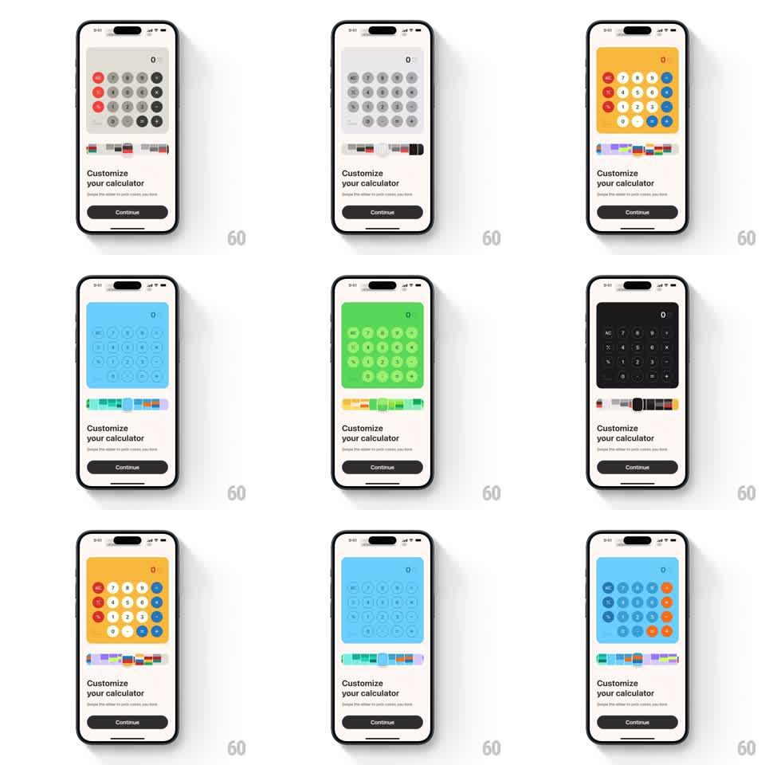

Media
Frame-by-frame

Rebuild this interaction 1:1: a "Customize your calculator" picker - scrubbing a horizontal palette slider instantly re-themes a live calculator preview (background, key tints, accents) with zero apply step.

Rebuild this interaction 1:1: a "Customize your calculator" picker - scrubbing a horizontal palette slider instantly re-themes a live calculator preview (background, key tints, accents) with zero apply step. ## Integration Integration: stack-agnostic spec - springs given as stiffness/damping, timed motions as duration + curve; map every value to your framework and animation library of choice. ## Scene Onboarding card: a working calculator mock (display "0", AC and digit keys in circles) inside a tinted panel, a horizontal palette slider beneath (a track of small color swatches with a draggable thumb), "Customize your calculator" heading, "Swipe the slider to pick colors you love" subcopy, dark Continue button. ## Motion spec Pattern: scrub-linked live theming. - Drag the thumb: palette position maps linearly to a theme index; the calculator's panel background, key fills, and accent key colors interpolate to the new theme's colors (~120ms ease so fast scrubs still feel smooth). - Thumb: slightly enlarges while held (scale 1.15) with haptic ticks as it crosses each swatch boundary. - Snap on release: thumb settles to the nearest swatch center (spring ~350/26, ~200ms); theme finishes its interpolation. - Display digits and layout never move - only color changes. ## Calibration - Theming is continuous with drag position, not tap-to-select - the preview must track mid-scrub. - Color interpolation goes through perceptual space so midpoints don't go muddy gray. ## Reduced motion Theme swaps without interpolation (still live-tracking). ## Don't miss - Continue commits the currently shown theme - there is no separate preview state. - The slider track shows ~8-10 swatches; the thumb is always visible over them.